Anglesey Coastal Path
April/May 2015
Holyhead to Llanfairpwll
| Previous | Intro |
In Holyhead we had an excellent dinner and stayed in an excellent B&B, but the next day we woke to rain. This was unfortunate, because we missed out on some views that we had looked forward to. The morning was a climb up Holyhead Mountain. This isn't high, but given that there were no views to be had, we didn't go to the top. All the same, climbing the rocky path had us huffing and puffing, and the rocks under foot were slippery with the rain that continued to pelt us. There were many path intersections with choices, and we made several wrong selections. We had a general rule of not going too far right (toward the cliffs) or too far left (toward the mountain top). We had seen pictures of the South Stack lighthouse, and we knew that there was a cafe not far from it. With great relief we found it around lunchtime. We went in, leaving puddles as we found a table. We had bowls of steaming hot broccoli and Stilton soup -- did anything ever taste that good? We stayed a long time, trying to get warm, athough actually getting dry was out of the question.
The rain occasionally let up, and we spent the afternoon walking around one headland after another, past inlet after inlet.
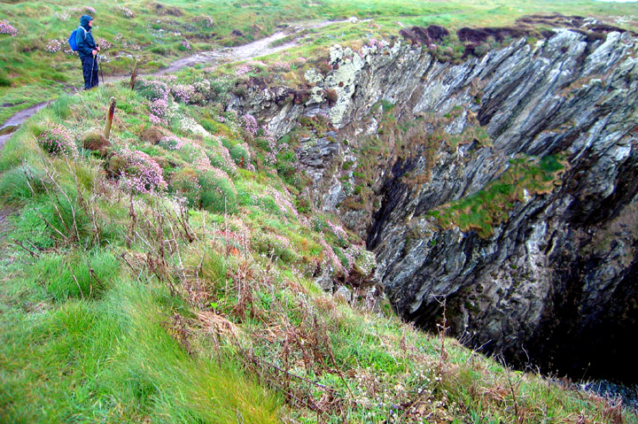
We finally arrived in Trearddur, and our B&B hostess was outstandingly kind and helpful when we appeared, dripping, at her door. She took our soaked rain trousers and jackets to her drying room and our boots to dry in front of her Aga. The place down the road where we went for dinner was having a power problem. Long after we had ordered (and my mouth was watering for their butternut squash, pear, and Roquefort pie), the waiter came back and said that they could manage only fish and chips. Oh, well.
The next morning was light drizzle and heavy mist. We passed several more sea aches -- seen through the mist.
| 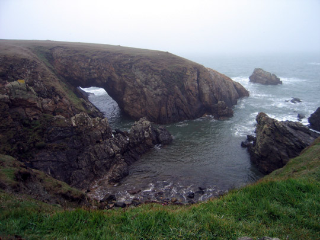 | 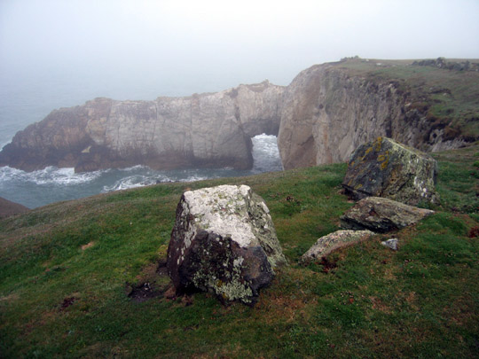 |
| It was about lunchtime when we came to Four Mile Bridge, taking us off Holy Island. When we had read that we would cross Four Mile Bridge, both of us had pictured a very long bridge. But no! Its name comes from the fact that it's four miles from Holyhead! We sat on the end of the bridge to eat our sandwiches. | 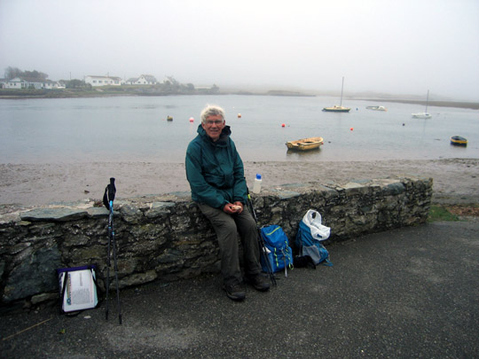 |
| 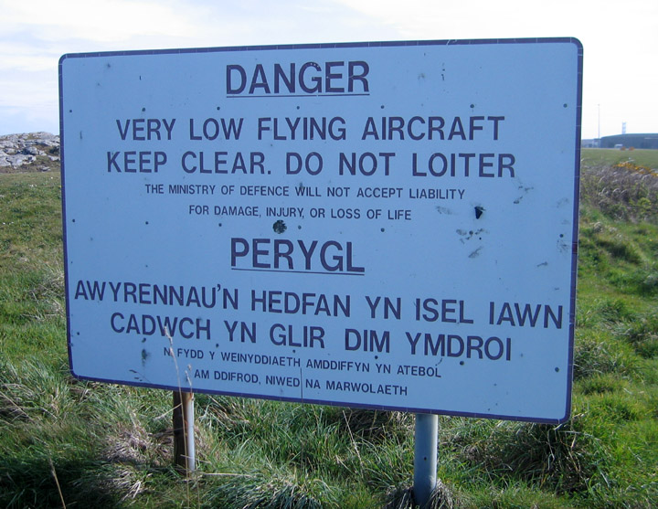 |
Several hours later we came to RAF Valley. Prince William was at this base for several years. The path goes across the end of the runways, and apparently when the planes take off, one feels like ducking, they're so close. But it was Sunday, and the base doesn't operate on Sundays, so we saw no action.
|
There was a mile or two of beach walking just before our town for the night, Rhosneigr. This was a Bank Holiday Sunday, and lots of wind surfers were putting on a colorful display. There's a river before the town, so one has to go a half mile upstream to a footbridge. Unfortunately we missed the turn for the proper path up through the dunes, so we ended up making a difficult route out of what should have been simple.
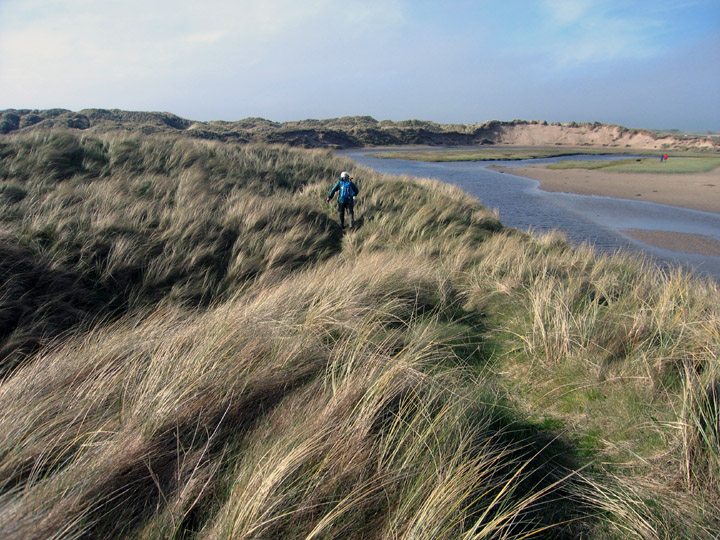
A great delight, however, was the welcome to our B&B. We were walking down the main road through Rhosneigr, tired and unsure exactly where our B&B was. We heard a voice from a house we had passed, calling out "Jennifer!". I almost didn't turn around, since there was no way we could know anyone in Rhosneigr. But it turned out that our hostess, Rachel, had been watching out the window for us. She saw us trudging past, and guessed who we were. What happiness!
The next day the sun was shining again. We were now walking along the south-west side of Anglesey, and the coast was totally different from the cliffs of the north.
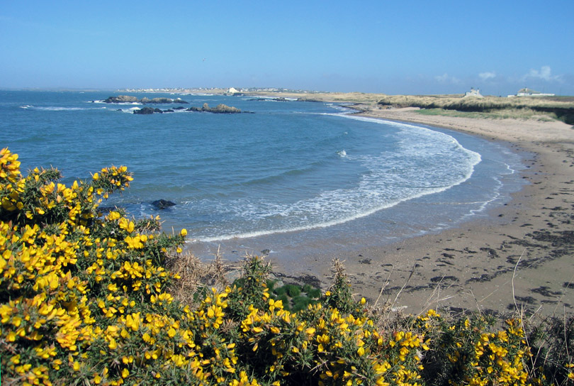
| We came to another neolithic burial chamber, Barclodiad y Gawres. It was larger than the one we had seen earlier, but we weren't allowed inside. | 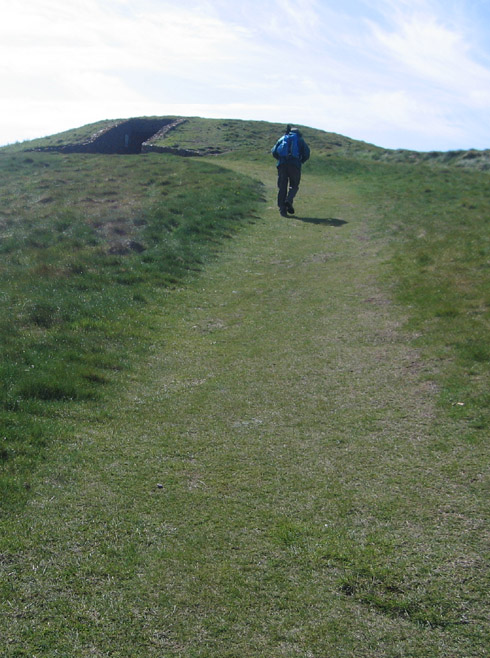 | 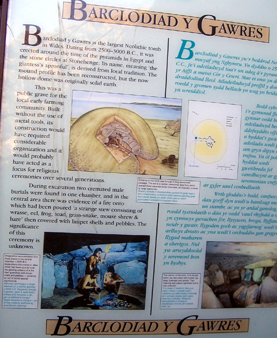 |
All morning, ever since we left Rhosneigr, we had been hearing the roar of motorcycles. By late morning, we finally were passing the source of the noise - a racing circuit. We walked past it, but it was above us and mostly hidden by shrubbery. We climbed up and had a bit of a view of the racers.
Fortunately, because we were dropping down to the beach level, the sound lessened considerably. It was a welcome relief, just as we came to the sight of the "Church in the Sea".
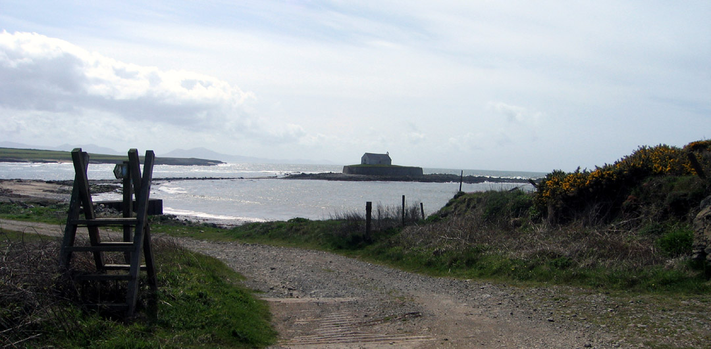
This tiny chapel, founded in the seventh century, was rebuilt in stone in the twelth century. The church was originally on a small peninsula, but tides eroded the land, making a tiny island. Parishioners built a causeway, but this was inundated at high tides. They eventually built a new church inland and this little church fell into disuse. It was restored in the 19th century, and there are still occasional church services. There are remains of the causeway, by which one can walk out to the church if it's not high tide.
| 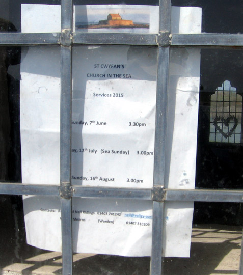 | The tide had been going out for an hour when we arrived. We decided to sit and eat our sandwiches, enjoying the scene while waiting for the water to recede some more. Then we walked on out to the church, but it was locked. It was hard stuffing in a donation, into the slot in the wall. | 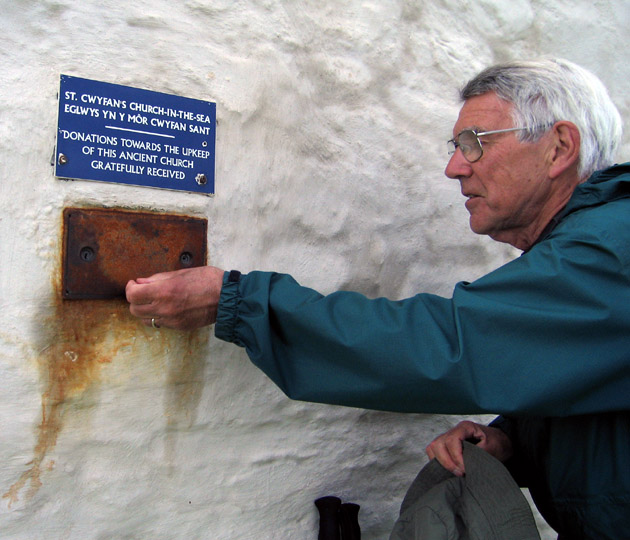 |
The next day it was about an hour earlier when we arrived at another spot with high tide restrictions. Unfortunately this time we were out of luck. We could have waited a couple of hours, but it was very windy and we weren't patient enough. Llanddwyn Island sounds like a wonderful place to visit, and maybe we'll return some day. It's a tidal island, attached to the mainland except at highest tides, but this was a spring tide, and the wind was fierce that day. The place to cross over was well covered by water.
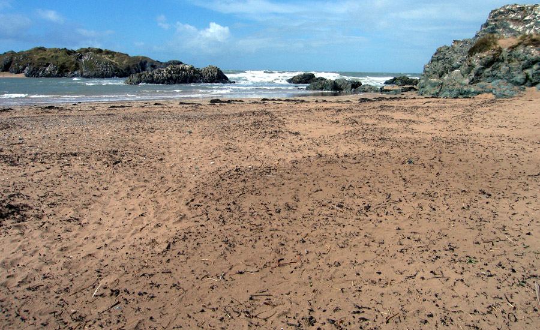
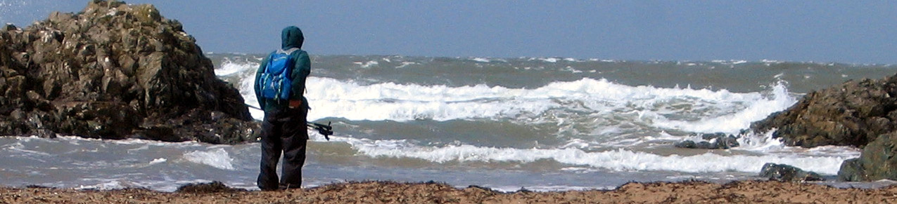
Soon after this we were in Newborough Warren. This is an interesting area that (as its name implies) was once home to a tremensous number of rabbits. Myxomatosis struck in 1954, almost wiping them out. There are still some, grazing with the wild ponies.
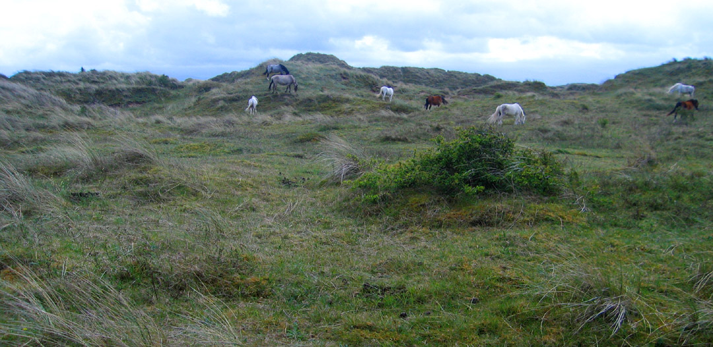
The area was formed 700 years ago, when a fierce storm blew sand inland. Marram grass was planted in Elizabethan times to stabilize the dunes, and a cottage industry sprang up, making marram grass mats. This craft continued for centuries. We came to a steel sculpture commemorating the marram grass mat makers.
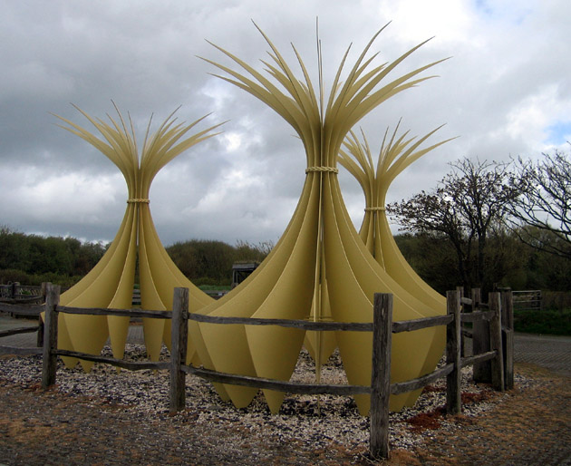
Close by there was a bird hide. Oh my, did we ever appreciate that! The wind had continued to be fierce, the rain had continued intermittently, and we were cold. It was wonderful to be out of the noise of the wind. We sat on the bench, ate our lunch sandwiches slowly, and had a luxurious rest.
| 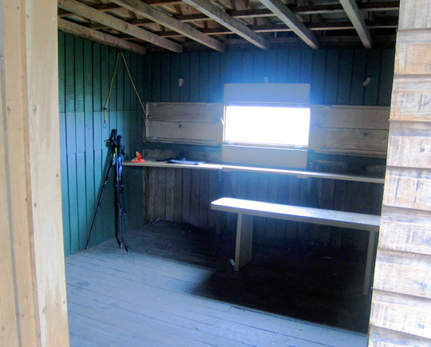 | 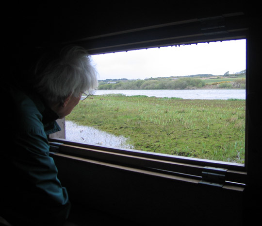 |
Not much later, we came to the stepping stones over the River Braint. We had seen pictures of these, and they looked like great fun. Maybe it was the wet rocks, coupled with strong gusts of wind? For some reason, we worried. The space between rocks looked enormous. Here are before and after photos, and it all looks perfectly benign. You don't see our shaking knees.
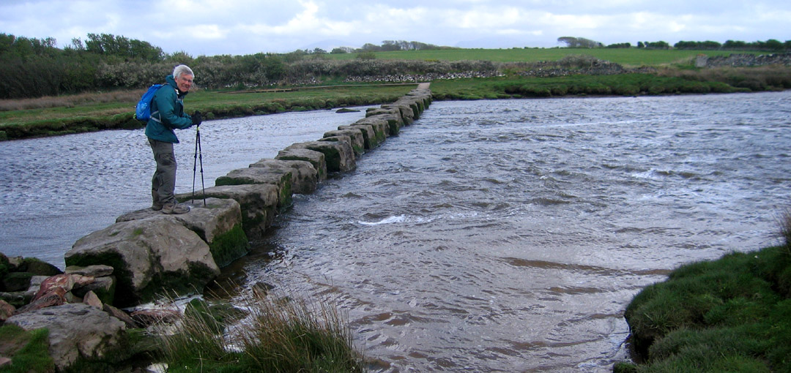
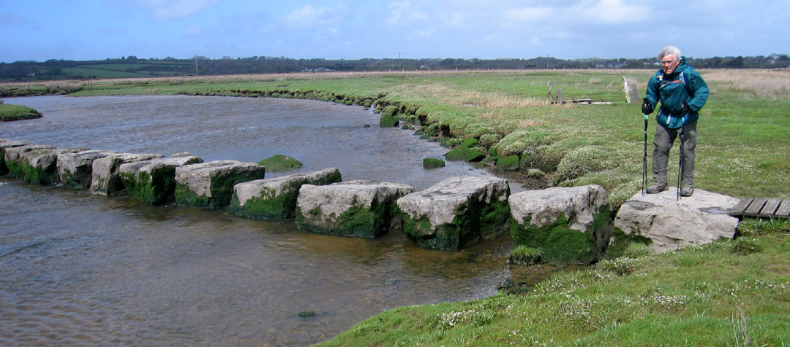
Soon after we went through some fields of cows with calves (they distrusted us, but decided to let us pass), we were back at the shore for our final few miles.
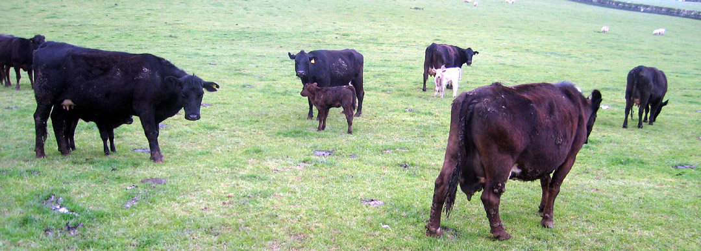
It had been a terrific ten days, with lots to see, and much pleasurable walking. We recommend Anglesey!
| Previous | Intro |